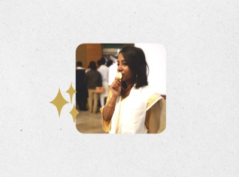
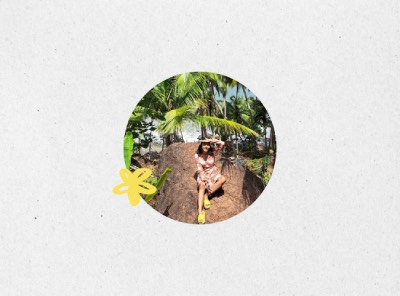
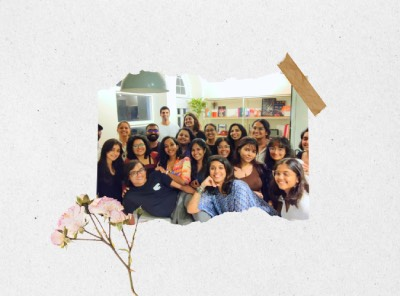
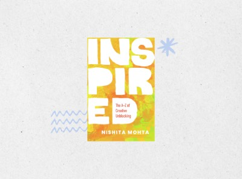
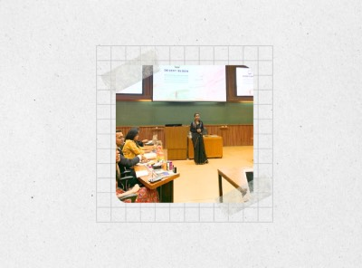
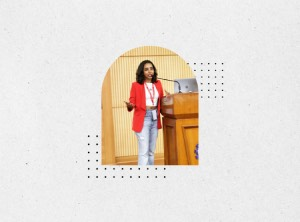
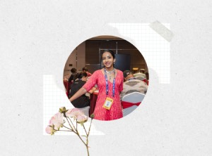

More thoughts, unfiltered
There’s no conventional route to becoming a
creative business consultant and leadership coach.
Ever since I understood the concept of a “profession”, I wanted to be a photographer.

Five years of architecture school set the foundation of my creative confidence and my curiosity about the human mind.

I explored everything around design, writing and travel curation in the first 4 years of my career.

Dove deep into leveraging systems & processes for a design business while working as the first Project Manager at Thought Over Design.

Self-published my book ‘Inspired: The A–Z of Creative Unblocking’ and have been conducting workshops to take it beyond the pages to readers & non-readers alike.

Working as a creative business consultant and leadership coach, partnering with founders to build businesses that suit their life.
I’ve answered some of the most common questions I get about my career pivots, in “10 Years of a Non-Linear Career”
Read NowAlways learning
B.Arch, Gold Medal at School of Planning & Architecture, New Delhi.
Strategic Management (online) by Copenhagen Business School.
Creative & Cultural Businesses Programme at the Indian Institute of Management, Ahmedabad.
Nalanda Diploma Course (Buddhist Philosophy & Psychology) at Tibet House, Cultural Centre of His Holiness The Dalai Lama, New Delhi.
Foundations of Entrepreneurship, by the Indian Institute of Management, Bangalore.
Level-1 Training for Leadership Coaching at Navgati (accredited with the International Coaching Federation).
Beyond the page


Lightening Talk Speaker, DesignUp Conference, Bangalore
Speaker, Pecha Kucha, Goa
Speaker, E-Yantra, IIT Bombay
Speaker, UX India Conference, Bangalore
Workshop Facilitator, DesignUp Conference, Bangalore
Workshop Facilitator, “Passion Project Circle”, Alt Food Co, Panjim
Workshop Facilitator, Salesforce Design Days, Hyderabad
Speaker & Workshop Facilitator, Vizag Junior Lit Fest, Visakhapatnam
Speaker, The Ultimate Nerd Off, Unbox Labs, Goa
Workshop Facilitator, “Shaping Your Portfolio”, LAFA Lab, Panjim
Speaker, “Writing Your First Book”, Dogears Bookstore, Margao
Workshop Facilitator, “AI Branding Lab”, Women in Tech Goa, Colva
More thoughts, unfiltered